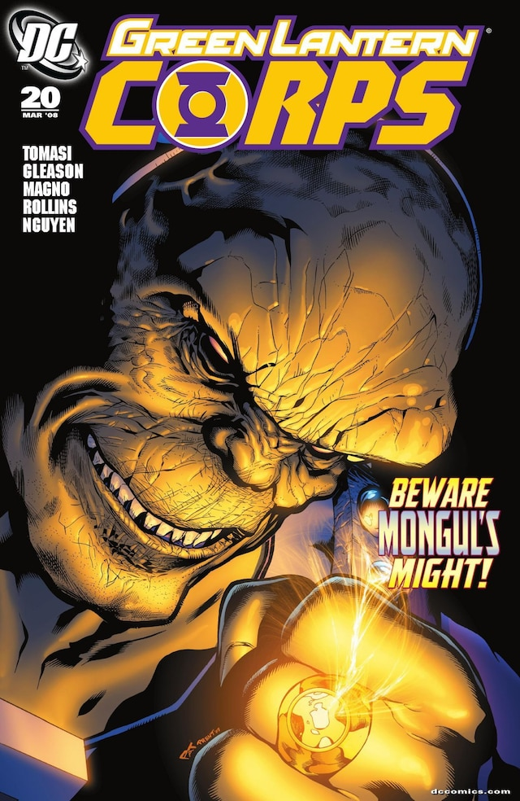

In-Universe History · Published 2008
Ring Quest
The search for scattered yellow rings leads the Corps into Mongul's trap.

After Sinestro Corps War · Published 2008
Trade contents: Green Lantern Corps (2006) #19–20 and #23–26
Spoiler boundary: the overview gives the setup. Open the labeled section below only for the ending and its consequences.
The setup
The Sinestro Corps War is over, but its weapons are still dangerous. As the Corps tracks down yellow rings, Mongul gathers power of his own. The pursuit brings Kyle Rayner, Guy Gardner, and their fellow Lanterns into an encounter with the Black Mercy plants.
In #24, Sodam Yat and Arisia have been captured and subjected to visions of their worst fears. #25 introduces the role of Mother Mercy as the rescue becomes a confrontation with Mongul and an entire world of the plants.
This is a Corps ensemble story: a cleanup mission becomes a test of how these Lanterns protect one another. It works best after Sinestro Corps War, with the ending of that conflict still fresh.
Spoilers — Ring Quest ending (Green Lantern Corps #26)
Bzzd plays a decisive part in the fight against Mongul but dies from his injuries. His ring passes to Mother Mercy, whose choice of green light gives the story a new Lantern as it mourns the loss of another.
The outcome makes the contrast between size and courage concrete: the smallest member of the team changes the battle. It also complicates the apparent division between a hostile world and a potential ally. Read the full confrontation in Green Lantern Corps #26.
Where to read
Green Lantern Corps: Ring Quest collects #19–20 and #23–26. DC's contents list skips #21–22; do not mistake the trade for an uninterrupted #19–26 collection. Peter J. Tomasi writes, with art including Patrick Gleason and Carlos Magno.
Next: continue the Corps' encounters with the other lights in Sins of the Star Sapphire (#29–32), then Emerald Eclipse (#33–38) for Mongul's campaign on Daxam.
Sources: linked DC issue and collection listings; ending reference: Green Lantern Corps #26. Reviewed November 4, 2026. Cover: Green Lantern Corps #20, DC Comics — non-commercial fan tribute.